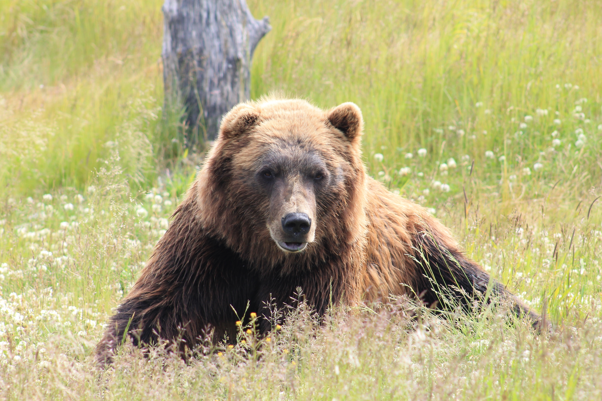
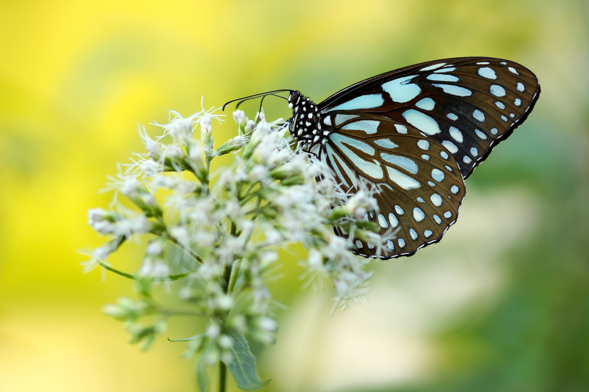
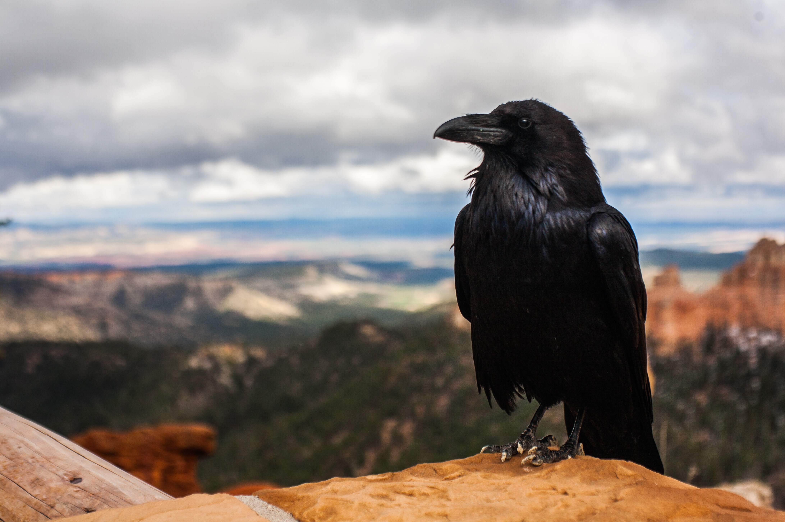
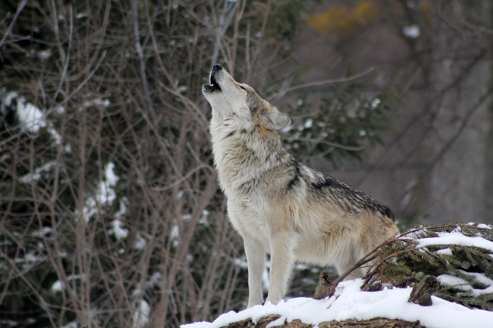

Your Spirit Animal Is...
THE BEAR

The spirit of the bear is strong and confident.
You are a natural-born leader, helpful, and often in charge.
As well as being very wise you can often be overpowering with your thoughts, so try and be open-minded.
The bear also represents the importance of rest and alone time which you enjoy and need regularly.
Your sensitivity allows you to bond well with people whilst being very protective, coming to the rescue of those in your circle in times of need.
The one caution of which to remain aware is the hot tempers. Be careful not to attack without just cause.
The Bear Symbolises:
Aggression
Authority
Confidence
Energy
Patience
Peace
Power
Strength
Your Spirit Animal Is...
THE BUTTERFLY

You have a natural lightness of spirit!
Loving the beauty of nature and guided by the greatest good when it comes to maintaining balance with the environment.
You’ll find that you’re better equipped to look at difficult situations from another angle, you don't take things too seriously and overall keep a positive outlook on life.
Change is not traumatic for you, your up for the challenge and it becomes a joyous experience.
You're naturally social, colorful and vibrant.
You live each moment to the fullest.
The Butterfly Symbolises:
Awakening
Celebration
Change
Grace
Joy
Life
Lightness
Transformation
Your Spirit Animal Is...
THE CROW

The spirit of the crow is wise and fearless.
You observe and make sure you have the best perspective which gives you a better knowledge when it comes to your surroundings.
You are quick to accept change and just as fast to move forward with new opportunities.
You pride yourself with your personal integrity. You keep your promises and you honor your word.
Your know to be quite mischevious and play alot of tricks on people.
Your inquisitive philosophical nature leads you to constantly question authority and the status quo, sometimes just for the sake of asking, "Why?".
The Crow Symbolises:
Adaptability
Fearless
Flexible
Integrity
Intelligent
Mischevious
Prophetic Insight
Trickster
Your Spirit Animal Is...
THE DEER

You are born with the gentle giants of the spiritual world. Trust and kindness is never overlooked with you.
Your moves you make are purely instinctual and have the ability to move through life and its obstacles with grace.
It might take you longer than most to make up your mind but when you do nothing and nobody can catch you!
You can be very inspiring but do it with a nudge rather than pushing with your horns.
Your a naturally observant peacemaker, showing the way for communal healing by providing different perspectives from a place of love.
You have the ability to see through the darkness and help guide others to safety or home.
The Deer Symbolises:
Alertness
Beauty
Creativity
Gentleness
Grace
Influential
Love
Peace
Your Spirit Animal Is...
THE FOX

You have an uncanny knack for awareness. Very little gets by you, especially any form of trickery.
As you respond to your environment and current circumstances your reaction is swift and smooth.
You have little trouble adapting to new situations or overcoming obstacles on a moment-by-moment basis.
You have a natural sense of humor that people may find hard to keep in check.
You're an agile thinker and doer. Because of this, your critical thinking skills are lightening quick and usually on the money!
The Fox Symbolises:
Adaptability
Cleverness
Cunning
Guidance
Protection
Quick Thinking
Strategy
Trickster
Your Spirit Animal Is...
THE OWL

The spirit of the Owl is wisdom.
You are keen, perceptive, skeptical and have a strong intuition and can access information and wisdom that's usually hidden to most.
You're in touch with your subconscious and don't fear death and darkness, embracing them as part of the continual cycle of life.
You adaptable and thrive on change.
Once your mind is set on something there is no stopping you to achieve it.
You have a constant need of freedom and solitude.
Even though you are a calm, non-violent and never the aggressor you only fight for survival or if your honor is at stake.
The Owl Symbolises:
Comfort
Freedom
Keen Sight
Mystery
Protection
Stealth
Vision
Wisdom
Your Spirit Animal Is...
THE WOLF

Family comes first is what you go by. You form deep connections with close friends and family members, and they know you'd do anything to protect them.
You're loyal, devoted and passionate.
You have an innate connection with Nature and a craving for freedom.
Your life is filled with the intense instincts who constantly keeps you vigilant in the face of potential danger. Sometimes you don’t trust yourself as much as you should. When you find yourself falling into that emotional pattern rely on your keen mind and logic to renew balance.
You are a natural-born leader, clear-headed and strong-minded.
The Wolf Symbolises:
Attachment
Freedom
Friendly
Intelligent
Nobility
Order
Sociable
Strength